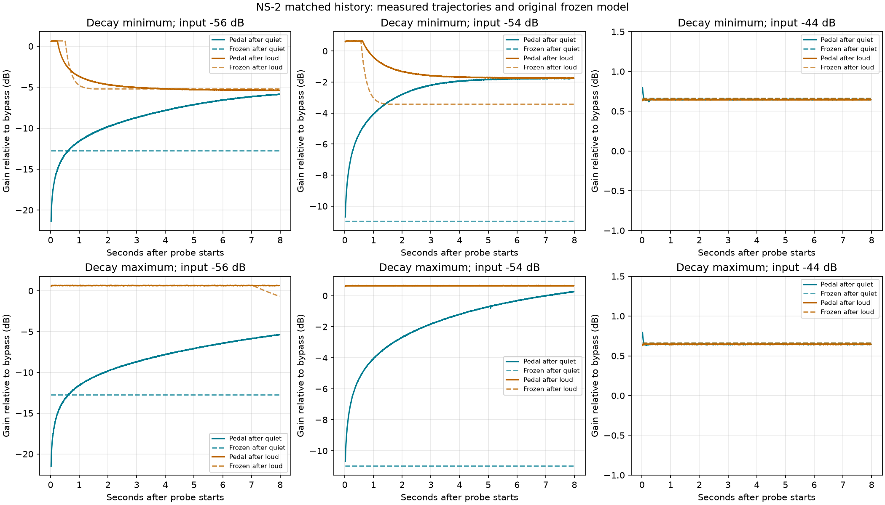
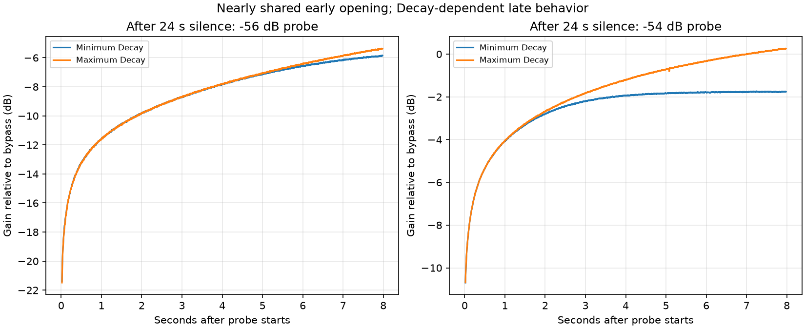

30 October 2026 · Matched 1 kHz probes after silence and after a loud tone · Threshold fixed at 3:00 · Decay extremes
Offline model selection completed: five tested candidates and whole-condition validation show why a good fit to this packet is insufficient. The proposed replacements regress on older notes; retain production DSP and request no further captures.
Capture stage complete. No further NS-2 recordings are requested now. These takes establish a near-threshold upward dynamic that the existing model lacks, alongside strongly Decay-dependent behavior after a loud signal. They also show why neither a threshold correction nor a universal one-second attack is an adequate fix. The current model remains the production baseline while a replacement control law is fitted and tested offline.
The locator selected −56/−54 dB partial-opening probes and a −44 dB prompt-opening control. Each long take contains the same 24 s quiet reset → 8 s probe → 2 s at −12 dB → 8 s identical probe sequence. The third take is a true bypass check. Both model variants and the +.06005 dB open-path calibration were saved in the protocol before recording; primary scores contain no new-data parameter fit.
All three takes report zero xruns and marker quality .998. Exact played-signal hashes match the frozen stimulus, and no recorded sample reaches |x|≥.999. The closing bypass differs from the locator bypass by only .00025–.00157 dB across the probe/reference levels, far below the predefined .1 dB review limit. Open gain is about +.646 dB in both engaged takes, approximately .014 dB below the locator; this small difference is retained in the prediction error rather than fitted away.
Stored capture latencies are 449, 450 and 577 samples and are compensated individually. The minimum-Decay take retains an approximately one-sample loopback offset relative to the locator, consistent with a 20.8 μs edge discrepancy. Maximum Decay agrees within .0013 phase-equivalent sample; its silence-to-probe edges align on the sample grid. Loopback level changes stay below .0016 dB. The one-sample residual is documented and left in the primary score; it cannot explain changes lasting seconds.
The primary gain estimator is a 10 ms coherent magnitude, sampled every millisecond, calibrated by the true locator bypass at the same input level. Hann-windowed projections provide separate gain/noise checks. Every scored probe window has at least 55 dB carrier margin over nearby non-harmonic bins. These bins can also contain leakage, so this is a robustness indicator, not a confidence interval. Small local fluctuations remain; none explains the sustained multi-dB trends.
The last five seconds of each 24-second reset are roughly −101 dBFS RMS at minimum Decay and −102 dBFS at maximum on the output channel. The short tails after the final loud reference are noisier and are not treated as a settled closed-gate noise floor. Silence is never scored as an output/input gain ratio. Output silence cannot prove that every hidden internal state has reset; the almost identical early opening after reset is stronger evidence that the relevant starting behavior is comparable.
Centered-window contamination at the next loud transition is excluded: primary scores use 0.1–7.9 s per eight-second probe; plots and the curve archive's valid mask exclude 20 ms at each boundary. One take per Decay setting does not provide repeatability confidence intervals. The result concerns Input → Output at one Threshold position, not the Send/Return path or a recovered circuit.
| Input / history | Minimum Decay: gain at 0.1–0.3 s → 6.5–7.5 s | Maximum Decay: same windows |
|---|---|---|
| −56 dB, after quiet reset | −15.49 → −6.15 dB | −15.50 → −5.87 dB |
| −56 dB, after loud conditioning | +.65 → −5.36 dB | +.65 → +.65 dB |
| −54 dB, after quiet reset | −7.03 → −1.77 dB | −7.00 → −.01 dB |
| −54 dB, after loud conditioning | +.65 → −1.73 dB | +.65 → +.65 dB |
| −44 dB control, either history | About +.646 dB throughout | About +.646 dB throughout |
Shared early opening: between 0.1 and 1.5 seconds, the quiet-start curves at the two Decay extremes differ by only .037 dB RMS at −56 dB and .022 dB at −54 dB, despite the model's Decay constants changing by a factor of 18.7. This supports a substantial upward behavior that is largely independent of Decay in that initial interval.
Late behavior is not Decay-independent: at −54 dB, the quiet-start curves differ by 1.336 dB RMS over 3–7.9 s. Minimum Decay is approaching −1.77 dB gain; maximum Decay continues toward open gain. The measured 6–7 s slopes are +.018 and +.319 dB/s respectively. Thus the earlier description of a fixed approximately one-second opening “independent of Decay” must be restricted to the early behavior; it is not a valid complete control law.
Retained history: after a loud tone, maximum Decay keeps these probes essentially open over the observation window, while minimum Decay attenuates them. At −54 dB with minimum Decay, the quiet/loud history difference shrinks from 7.70 dB early to .042 dB late. At −56 dB it shrinks from 16.17 to .796 dB and is still evolving. This does not prove a unique infinite-time equilibrium, but it contradicts the persistent 7.56 dB switch-state gap predicted by the frozen model at these inputs.
Prompt opening survives: the −44 dB probe and −12 dB conditioning onsets reach within 1 dB of open gain in the first valid 1 ms analysis bin and remain there for at least 20 ms. The estimator and stimulus transition are both 1 ms; no sub-millisecond response is claimed. A global one-second attack would clearly violate this control.


The original threshold map uses T=−49.40 dB, opening at T+1.29 dB. The second, explicitly provisional variant shifts T to −54.29 dB, placing opening at −53 dB between the locator's partial and open steps. Both keep the same peak follower, immediate upward state updates, falling dynamics, hysteresis and output law.
| Decay / input | Quiet-start RMS: original / shifted threshold | After-loud RMS: original / shifted threshold |
|---|---|---|
| Minimum / −56 dB | 4.879 / 2.348 dB | .560 / 4.095 dB |
| Minimum / −54 dB | 8.538 / 4.529 dB | 1.831 / 2.111 dB |
| Maximum / −56 dB | 5.001 / 2.437 dB | .239 / .016 dB |
| Maximum / −54 dB | 9.433 / 5.469 dB | .016 / .016 dB |
Scores cover 0.1–7.9 seconds per probe. The −44 dB controls are about .015 dB RMS for either model. The shifted threshold helps some quiet-start offsets while substantially worsening minimum-Decay −56 dB after-loud behavior. Neither variant predicts the rising quiet-start shape. Even after removing a constant late offset, quiet-start errors remain 3.31/1.45 dB at minimum Decay and 3.52/2.46 dB at maximum for −56/−54 dB. A calibration offset is not the explanation.
The original model is useful for the open path and much of the loud-conditioned holding behavior. Its failure is specific: the control cannot gradually move upward after a quiet reset, and its fixed hysteretic switch can retain too much difference between histories. These are behavior-level conclusions, not evidence for a particular component or state count.
Current model, in dB relative to the guitar reference: E and V rise immediately to L. E falls toward L with τ = Decay; V falls with τ = 7.94 · Decay. The switch opens at T+1.29 and closes 10.47 dB lower. G = 0 open; closed, G approaches −7.56 dB. gain_dB = .6 + G − .889 max(0, T−V).
For a rising constant-input step below opening threshold, E and V immediately reach the new level and G stays closed. Hence the model has no mechanism for a sustained positive gain slope. Moving T changes the level at which a switch jumps, but does not create this missing evolution. After a loud tone, the same input can remain inside the hysteresis band and retain G=0; once V settles, that leaves the model's 7.56 dB gap. The measured convergence at −54 dB rejects that particular latch behavior under the tested conditions.
A separate diagnostic fits the quiet-start minimum-Decay curve to
g(t) = g∞ − A exp(−t/τ).
Fitting only 0.05–3 s gives τ=.866 s at −56 dB and .779 s at −54 dB. These early fits also approximately follow the maximum-Decay early curves. But the −56 dB fit misses the subsequent 3–7.9 s interval by 2.02 dB RMS. Fitting that whole interval changes τ to 2.257 s, whereas the whole-window −54 dB fit gives 1.001 s. The fitted asymptotes also change. These are sensitivity diagnostics, not new release/attack constants to install. A universal one-second pole is too restrictive.
Supported constraints: upward motion near the threshold has its own effective rate; late behavior interacts with Decay or retained state; stronger input must still open promptly; and an indefinitely retained fixed gain jump is unnecessary in at least the minimum-Decay −54 dB case. Unresolved: whether a nonlinear update of existing states, a Decay-dependent soft transfer, or an additional state is the simplest explanation across all existing captures. The present data do not uniquely identify a charging circuit, a true asymptote at every level, or a universal internal time constant.
Keep the existing production implementation until a replacement passes the full regression set. It already preserves the important prompt opening and broad holding behavior. The near-threshold error is real, but these probes lie 44–56 dB below the guitar-peak reference; its audible importance must be assessed on compressed sustain, hum/noise and quiet note tails. There is no listening verdict yet.
The simplest defensible next candidate is a continuous bounded control law using no more states than the current model: retain rapid response to substantial overdrive and Decay-dependent downward memory, and replace the immediate near-threshold upward transition and permanent switch gap. Test an input/state-dependent rise on an existing control state before adding another one. A generic candidate family is
q[n+1] = clamp(q[n] + Δt · (A(L[n], q[n]) − B(Decay, q[n])), qmin, qmax) gain_dB[n] = F(q[n], L[n], Threshold), bounded above by the measured open gain.
This is a family to identify, not a calibrated replacement: the functions A, B and F and the state coordinate are not determined by the present measurements. The early shared rise motivates a largely Decay-independent drive term initially; the late divergence and after-loud behavior constrain the opposing term or transfer. Equivalent state reparameterizations can describe the same data. Do not present this equation as recovered circuitry, or ship guessed coefficients.
The concrete handoff is the measured/frozen trajectory archive ns2_history_curves.npz, the complete numerical results, and the versioned reference evaluator. These define implementable acceptance fixtures:
There are no validated replacement coefficients yet. The values .779/.866/1.001/2.257 s above are explicitly unsuitable as a global Attack/Release map. The existing 24.6–460.3 ms Decay map remains the baseline for comparison, not a newly validated physical pole range.
No additional NS-2 capture is needed for the next model-selection step. The current archive already contains matched histories, both Decay extremes, multiple operating levels, the locator staircase, original jumps and 220 Hz decaying-note/phrase captures. Another set of similar steps would add less information than fitting and testing these complementary cases.
Use grouped cross-validation by complete condition, not interleaved time samples. Fit one subset of levels/histories and evaluate the remaining ones, then rotate the split. Since the model family is being chosen after examining these results, call this retrospective generalization testing, not a new blind validation. Keep the original decaying notes, light picking, intermediate Decay settings and other Threshold positions as regression checks; reinterpret the old dynamics “bypass” takes as engaged, as previously documented.
Provisional engineering gates for a candidate are below .5 dB RMS on the trustworthy near-threshold trajectories, below .25 dB late-window bias, history-gap accuracy within .5 dB, and no loss of prompt opening on −44/−12 dB controls at the current measurement resolution. These are proposed numerical criteria, not established audibility thresholds. Reject any improvement that needs a separate threshold per history or worsens the important decaying-note tails. Compare gain-matched guitar playback before adopting added complexity.
A future capture would be justified only by a specific unresolved, audibly relevant ambiguity that these recordings cannot test—for example a new model predicting fundamentally different behavior after a changed reset duration. That is not a request to record more now. The hardware capture task for this NS-2 question is finished; remaining work is offline identification and listening.
cdOPENBLAS_NUM_THREADS=1 MPLCONFIGDIR=tools/research/.mpl-cache \ python tools/research/analyze_ns2_history.py
The script verifies frozen model/source/stimulus hashes, checks the closing bypass, reproduces all prerecording predictions, measures trajectories and prompt controls, and runs separately labeled local exponential diagnostics. Outputs: JSON, log, 1 ms curve archive with valid mask, history comparison, opening comparison. Raw audio remains local. Production C++ is unchanged.